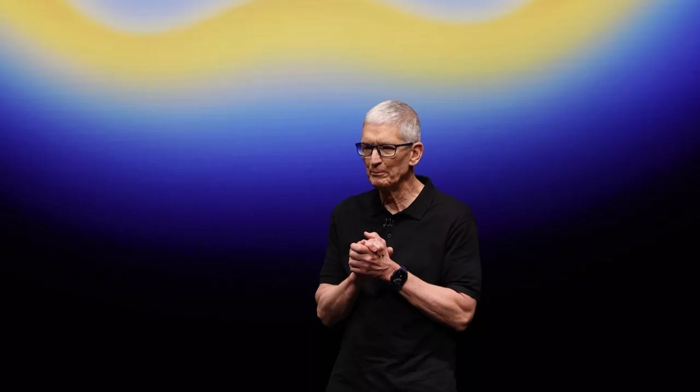

Tim Cook deja Apple tras 15 años como CEO: John Ternus será el nuevo líder de la compañía más valiosa del mundo
El cambio de mando en la empresa tecnológica más influyente del planeta marca el fin de una era y abre una nueva etapa bajo el liderazgo de un ingeniero de hardware que lleva 25 años en la compañía.

Apple anunció este lunes uno de los movimientos corporativos más significativos del sector tecnológico en la última década. Tim Cook dejará el cargo de CEO de la compañía, rol que ocupó desde agosto de 2011 cuando sucedió al fundador Steve Jobs, y será reemplazado por John Ternus, actual vicepresidente senior de Ingeniería de Hardware. La transición fue aprobada de forma unánime por el Directorio de Apple y se hará efectiva el 1 de septiembre de 2026, fecha en que Cook pasará a ocupar el cargo de presidente ejecutivo del consejo de administración. No se trata de una salida abrupta: Cook continuará al frente hasta el cierre del verano boreal trabajando junto a Ternus para garantizar una transición ordenada.
El legado de Cook al frente de Apple es difícil de exagerar. Cuando asumió en 2011, la compañía tenía una capitalización bursátil de alrededor de US$350.000 millones. Bajo su conducción, Apple se convirtió en la primera empresa en superar los US$3 billones de valor de mercado y hoy es considerada la compañía más valiosa del mundo. Durante su gestión se lanzaron el Apple Watch, la línea de servicios que incluye Apple Music, Apple TV+ y Apple Arcade, la transición completa de Mac a los chips Apple Silicon de diseño propio, y se consolidó el iPhone como el producto de consumo masivo más reconocido del planeta. Cook también fue una pieza clave en las negociaciones con gobiernos de todo el mundo y en la construcción de la cadena de suministro global que hizo posible ese crecimiento.
John Ternus, de 50 años, se incorporó a Apple en 2001 y asumió la vicepresidencia senior de Ingeniería de Hardware en 2021. Es el responsable directo del diseño y la ingeniería del iPhone, el iPad y la Mac en los últimos años, por lo que su perfil es el de un líder forjado en el producto y no en las finanzas o las operaciones. Ese sesgo hacia la ingeniería es considerado estratégico en un momento en que Apple busca consolidar su liderazgo en inteligencia artificial integrada al hardware y expandirse hacia nuevas categorías de dispositivos. Junto con su nombramiento como CEO, Ternus se incorporará al Directorio de la compañía a partir del 1 de septiembre.
El nuevo organigrama también contempla que Arthur Levinson, quien durante 15 años ocupó el rol de presidente no ejecutivo del Directorio, pasará a ser director independiente principal. Cook, por su parte, tendrá un rol activo como presidente ejecutivo, enfocado especialmente en la relación con reguladores y funcionarios de todo el mundo, una de las áreas donde su perfil y su experiencia diplomática son más valorados. El mercado recibirá el anuncio en las próximas horas y los analistas observarán de cerca si la transición genera volatilidad en la acción de Apple, una de las más seguidas del mundo.